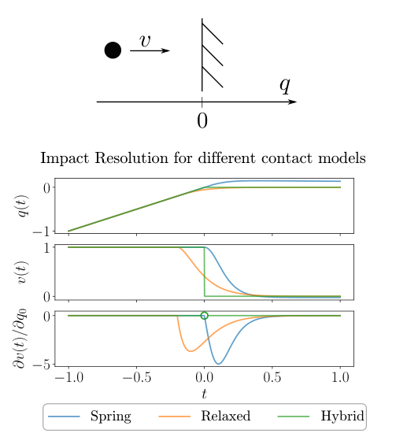
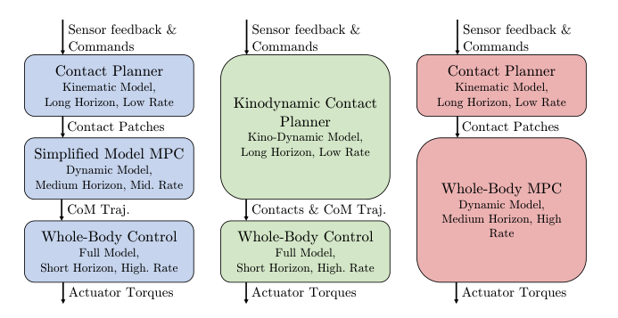
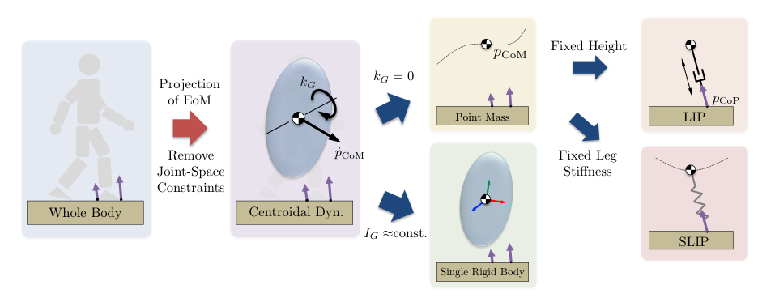
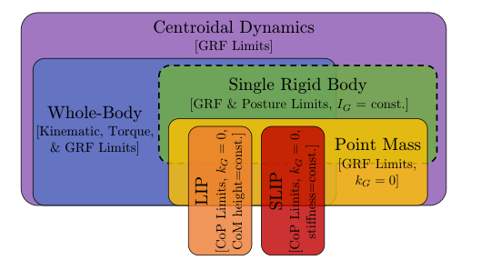
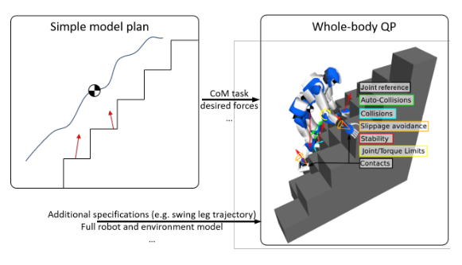

Background & Motivation
這是一篇由六位模型派核心學者合寫的足式機器人「優化式控制」全景綜述。它的統一視角:過去十年,社群已收斂到「把運動生成寫成一個最佳控制問題(OCP)」;但通用 OCP 因為接觸的非平滑性、非凸性、高維度而無法直接線上求解。綜述沿四個工具箱梳理領域怎麼讓它可解——接觸建模與排程(III)、簡化模型(IV)、數值轉錄與求解(V)、全身 QP 反應式控制(VI)——並以「模型式方法如何與學習式方法合流」收尾。
A panoramic survey of optimization-based control for legged robots by six leading model-based researchers. Its unifying lens: over the past decade the community converged on writing motion generation as one optimal control problem (OCP)—which is intractable online due to contact non-smoothness, non-convexity, and dimensionality. The survey organizes how the field makes it tractable via four toolboxes—contact modeling and scheduling (III), simplified models (IV), numerical transcription and solvers (V), whole-body QP reactive control (VI)—and closes with how model-based methods should merge with learning.
如果只有 30 秒In 30 seconds
- 背景 — 十年間足式機器人從少數實驗室專利變成產業常態(如 Boston Dynamics Spot);里程碑背後的共同引擎是優化式控制:預測式(MPC 類,顯式模型往前推演)與反應式(只管當下瞬間)。
- Background — In a decade, legged robots went from a few labs to industrial reality (e.g., Boston Dynamics Spot); the common engine behind milestones is optimization-based control: predictive (MPC-style reasoning over an explicit model) and reactive (only the current instant).
- 問題 — 通用 OCP(式 1)理論上什麼動作都能編碼,但接觸使動力學非平滑/剛性、全身模型高維非凸,線上求解不可行。整個領域=「讓這個 OCP 變得可解」的各種折衷。
- Problem — The general OCP (Eq. 1) can encode any behavior, but contacts make dynamics non-smooth/stiff, and whole-body models are high-dimensional and nonconvex—unsolvable online. The whole field = trade-offs that make this OCP tractable.
- 地圖 — 四個決策軸:接觸怎麼建模(剛性 hybrid/互補 vs 軟化平滑)與排程(固定順序 vs 讓優化自己選);動力學怎麼簡化(centroidal → SRB / 質點 → LIP / SLIP);怎麼轉錄(multiple shooting / collocation / DDP);計畫怎麼上真機(whole-body QP,百微秒~毫秒級)。Table I 把 60+ 篇代表作放進這個矩陣。
- The map — Four design axes: contact modeling (rigid hybrid/complementarity vs softened smooth) and scheduling (fixed sequence vs letting optimization choose); model simplification (centroidal → SRB / point mass → LIP / SLIP); transcription (multiple shooting / collocation / DDP); execution on hardware (whole-body QP, sub-millisecond). Table I places 60+ representative papers in this matrix.
- 展望 — 趨勢:contact-implicit 興起、MPC 模型越用越完整、DDP 與稀疏 Riccati 求解器加速。開放問題:缺形式化分析(穩定性/遞迴可行性)、太依賴專家調參、與 RL 的關係未定——作者的答案是「合流,而非對抗」。
- Outlook — Trends: contact-implicit methods rising, ever more complete models in MPC, DDP and sparse Riccati-like solvers. Open problems: little formal analysis (stability/recursive feasibility), heavy expert tuning, unsettled relation to RL—the authors answer: fusion, not rivalry.
領域脈絡Field context
把優化用於機器人運動可追溯數十年:1990 年代用 QP 做冗餘機械臂的力矩控制,2000 年代推廣到模擬中的人形機器人;1990 年代中期凸優化的多項式時間解法與商用求解器成熟,讓「線上解優化」變得可行。2015 DARPA Robotics Challenge(DRC)前的一波研究聚焦「用凸優化做反應式平衡控制」;DRC 之後,重心轉向預測式控制:更動態的步態、更難的地形。
Optimization for robot motion goes back decades: the 1990s used QPs for torque control of redundant manipulators, generalized to simulated humanoids in the 2000s; polynomial-time convex optimization (mid-1990s) plus commercial solvers made online optimization practical. The wave before the 2015 DARPA Robotics Challenge (DRC) focused on reactive balance via convex optimization; after the DRC, the field pushed predictive control: more dynamic gaits, harder terrain.
為什麼堅持「模型式」?作者給出兩個理由:能自然地表達安全約束(未來應用的關鍵),且第一性原理模型在未見情境中泛化較好。代價:保證只跟模型一樣好,且感知資訊很難放進問題形式——這正是學習式方法的切入點。
Why stay model-based? Two reasons: safety constraints are naturally expressible (critical for envisioned applications), and first-principles models generalize to unforeseen situations. The cost: guarantees are only as good as the model, and perception streams are hard to fold into the formulation—exactly where learning enters.
目標讀者是「早期研究生 + 想補模型式背景的 ML 研究者」。Section II 是全文的執行摘要(讀完它=拿到地圖);III–VI 各自獨立成章,可按需求跳讀;每章結尾的 Relationship to learning 小節與 Section VII 串起「模型 × 學習」的主軸。
Target readers: early graduate students plus ML researchers needing the model-based background. Section II is an executive summary of the whole paper (read it = get the map); III–VI stand alone for selective reading; the per-section Relationship to learning notes and Section VII thread the model × learning storyline.
核心洞見 · KEY INSIGHTSKEY INSIGHTS
這篇綜述值得帶走的不是任何單一方法,而是這套「看懂整個領域」的框架:
What to take away is not any single method, but a framework for parsing the entire field:
- 一個 OCP、三個難點、四個工具箱。所有足式控制論文都可定位為「對式 (1) 的某種折衷」:你怎麼處理接觸、要不要簡化模型、用哪種轉錄、線上還是線下、要不要 WBC 兜底。
- One OCP, three difficulties, four toolboxes. Every legged-control paper can be located as "some compromise on Eq. (1)": how you treat contact, whether you simplify the model, which transcription, online or offline, and whether a WBC backstops it.
- 接觸是萬惡之源。不接觸就沒有梯度資訊(解對初值 non-analytic),所以梯度法「發現新接觸」先天困難——這解釋了為什麼固定步態順序至今仍是實用系統的主流,也解釋了 contact-implicit 為何難產。
- Contact is the root of all evil. Without touching, there is no gradient signal (solutions are non-analytic in initial conditions), so gradient methods struggle to discover new contacts—explaining why fixed contact sequences still dominate practical systems, and why contact-implicit methods remain hard.
- 簡化模型是一棵有譜系的樹。centroidal dynamics 是全身動力學的精確投影(不加人工限制);SRB、質點、LIP、SLIP 都是再加「人工限制」的後代。Fig.4 的樹 + Fig.5 的集合包含關係,是選模型的心智圖。
- Simplified models form a family tree. Centroidal dynamics is an exact projection of whole-body dynamics (no artificial restrictions); SRB, point-mass, LIP, SLIP are descendants with added artificial restrictions. Fig.4 tree + Fig.5 set containment = the mental map for model selection.
- 分層架構是計算現實的產物,不是原理必然。「規劃 → 簡化模型 MPC → WBC」的經典三層,只是把大 OCP 拆小的一種方式(Fig.2 還有兩種);作者坦言拆法 remains an art more than a science。
- Hierarchies are artifacts of compute, not principle. The classic planner → simple-model MPC → WBC stack is just one way to break the big OCP apart (Fig.2 shows two more); the authors admit decomposition remains an art more than a science.
- WBC 已是成熟技術;whole-body MPC 正站在 2007 年的位置。反應式 QP 控制(0.1~數 ms)已「近乎普世」;歷史類比:2007 年凸優化反應式控制備受質疑 → 2015 年普及。今日全身 MPC 面臨同樣的兩個質疑(線上算力、放棄凸性),作者預期同樣會跨過去。
- WBC is mature technology; whole-body MPC is where reactive QP was in 2007. Reactive QP control (0.1 to a few ms) is now near-universal; by analogy, convex reactive control was doubted in 2007 and commonplace by 2015. Whole-body MPC faces the same two doubts today (online compute, giving up convexity)—the authors expect the same crossing.
- 模型與學習終將合流。RL 的長處恰是 OCP 的短處:gradient-free(不怕非平滑)、會探索(不怕非凸)——甚至 Policy Gradient 可解讀為隨機平滑(randomized smoothing)。反向地,模型優化能給學習提供約束處理、結構與 warm start。
- Models and learning will fuse. RL is strong exactly where OCPs are weak: gradient-free (immune to non-smoothness), exploratory (immune to non-convexity)—Policy Gradient even reads as randomized smoothing. Conversely, model-based optimization offers learning constraint handling, structure, and warm starts.
Problem Diagnosis
統一的問題形式:一個什麼都能編碼的 OCPThe unifying formulation: an OCP that encodes everything
整個領域收斂到的形式——在狀態 \(x=(q,\nu)\)、控制 \(u\triangleq\tau\)、接觸力 \(\lambda\) 的軌跡上做優化:
The form the field converged on—optimizing over trajectories of state \(x=(q,\nu)\), control \(u\triangleq\tau\), and contact forces \(\lambda\):
指定初末狀態=點到點行走;把物體狀態放進 \(x\)=操作行為。通用性極高,但作者也承認 OCP 本身有先天限制——難以保證解軌跡的穩定性與強健性;本綜述聚焦另一個限制:計算複雜度。
Fixing initial/final states = point-to-point locomotion; putting an object into \(x\) = manipulation. Extremely general—though the authors concede intrinsic OCP limits (stability and robustness of solutions are hard to guarantee); this survey targets another limit: computational complexity.
三個難點 × 領域的對策(= 全文地圖)Three difficulties × the field's responses (= map of the paper)
| 難點Difficulty | 為什麼致命Why it bites | 對策(章節)Response (section) |
|---|---|---|
| 非平滑 / 剛性Non-smoothness / stiffness | 接觸使動力學混合(hybrid)或極端剛性:撞擊瞬間速度跳變、摩擦力不連續,直接丟給優化器=病態問題。Contact makes dynamics hybrid or extremely stiff: impact velocity jumps, discontinuous friction—feeding this to an optimizer yields ill-conditioned problems. | 剛性 hybrid / 互補約束、或軟化平滑;固定接觸順序 vs contact-implicit(III)Rigid hybrid / complementarity, or softening; fixed sequences vs contact-implicit (III) |
| 高維度Dimensionality | 全身模型自由度多,線上 MPC 算不完。Whole-body models have many DoF—too slow for online MPC. | 簡化 / 模板模型:centroidal、SRB、LIP、SLIP(IV)Simplified / template models: centroidal, SRB, LIP, SLIP (IV) |
| 非凸性Non-convexity | 解對初始猜測敏感,可能收斂到壞的(甚至不可行的)局部解。Sensitive to the initial guess; may converge to poor (even infeasible) local solutions. | 好的轉錄與求解器(shooting / collocation / DDP,V)+ 分層拆解 + warm startGood transcription and solvers (shooting / collocation / DDP, V) + hierarchical decomposition + warm starts |
| 殘留誤差 / 執行Residual error / execution | 簡化模型忽略的細節、太慢的重規劃頻率,真機上需要有人兜底。Details dropped by simple models and slow replans must be backstopped on hardware. | 反應式 whole-body QP 控制(VI)Reactive whole-body QP control (VI) |
把難點看見:一顆質點撞牆Seeing the difficulty: a particle hitting a wall

這張小圖是全篇的縮影:接觸建模=在「物理真實性」與「可微性 / 數值條件」之間交易。平滑化給你到處可用的梯度,但模型越準(越剛)、優化問題就越病態——這條 trade-off 曲線的精確形狀,至今 remain unknown。
This small figure is the paper in miniature: contact modeling = trading physical realism against differentiability / numerical conditioning. Smoothing buys usable gradients everywhere, but the more accurate (stiffer) the model, the worse conditioned the optimization—the precise shape of this trade-off remains unknown.
The Field Taxonomy(四個工具箱)The Field Taxonomy (four toolboxes)
先看架構:大 OCP 怎麼拆(Fig.2)Architecture first: how the big OCP gets split (Fig.2)

工具箱 1:接觸建模與排程(§III)Toolbox 1: contact modeling and scheduling (§III)
建模。剛性接觸的數學核心是互補約束(complementarity):不穿透、力不拉、兩者至少一個為零——
Modeling. The mathematical core of rigid contact is the complementarity constraint: no penetration, no pulling forces, and at least one of the two is zero—
等價於 hybrid 系統(mode / guard / reset \(x^+=R(x^-)\))。病態案例:接觸 Jacobian 秩虧時力不唯一(四腳桌 / 平足壓力分布不定),演算法會「不自覺地」替你挑一個解。軟化路線(彈簧阻尼、MuJoCo 式鬆弛)換得平滑,但真實剛度=數值剛性。
Equivalent to a hybrid system (mode / guard / reset \(x^+=R(x^-)\)). Pathology: forces are non-unique when the contact Jacobian loses rank (a four-legged table / flat foot has indeterminate pressure), and algorithms silently pick one solution for you. Softened routes (spring-damper, MuJoCo-style relaxation) buy smoothness, but realistic stiffness = numerical stiffness.
排程。三條路:(a) 固定順序(雙足平地=左右左右,系統變成可微的 time-varying 問題,最實用);(b) 離散搜尋(MIP、SL1M 近似、RRT/PRM 取樣);(c) contact-implicit(把互補約束直接放進 NLP,收斂前允許違反互補=同時探索多種順序)。(c) 最優雅但數值條件差、極依賴初始猜測,多限線下使用。
Scheduling. Three routes: (a) fixed sequences (biped on flat ground = left-right-left; the system becomes a differentiable time-varying problem—most practical); (b) discrete search (MIP, the SL1M relaxation, RRT/PRM sampling); (c) contact-implicit (complementarity constraints inside the NLP; violating them before convergence = exploring several sequences at once). Route (c) is the most elegant but poorly conditioned, initialization-hungry, and mostly offline.
工具箱 2:簡化模型的譜系(§IV)Toolbox 2: the family tree of simplified models (§IV)

關鍵事實:浮動基座動力學的前六列與關節扭矩無關——運動的極限由接觸力約束(摩擦、單向性)決定。這六列正是質心動量 \(h_G=(k_G,l_G)\) 的演化:
Key fact: the first six rows of floating-base dynamics do not involve joint torques—motion limits come from contact-force constraints (friction, unilaterality). Those six rows are exactly the evolution of the centroidal momentum \(h_G=(k_G,l_G)\):
麻煩在角動量方程的雙線性項 \((p_i-p_{\mathrm{CoM}})\times\lambda_i\)(非凸)——催生了固定 CoM 區域、McCormick 包絡、Bézier 參數化等一票技巧。再簡化:LIP 模型(固定高度 \(h\)、\(k_G=0\))得到線性動力學
The trouble is the bilinear term \((p_i-p_{\mathrm{CoM}})\times\lambda_i\) in the angular part (nonconvex)—spawning tricks like fixed CoM regions, McCormick envelopes, and Bézier parameterizations. Simplify further: the LIP (fixed height \(h\), \(k_G=0\)) yields linear dynamics
(右式為放開高度假設的變剛度推廣;SLIP 即對 \(k\) 加 Hookean 彈簧限制)。多接觸情形則用Contact Wrench Cone(CWC)把各摩擦錐的淨效果聚成 6D 凸錐——ZMP 準則的多接觸推廣,適合離線預計算。
(the right equation generalizes to varying height via a stiffness-like \(k\); SLIP constrains \(k\) to act as a Hookean spring). For multi-contact, the Contact Wrench Cone (CWC) aggregates all friction cones into one 6D convex cone—the multi-contact generalization of the ZMP criterion, best precomputed offline.
工具箱 3:數值轉錄與求解(§V)Toolbox 3: numerical transcription and solvers (§V)
| 理論支柱Supporting theory | 計算方式Computation | 在足式的地位Status in legged robotics | |
|---|---|---|---|
| Global | Hamilton-Jacobi-Bellman(HJB) | PDE 求解 / 動態規劃PDE solvers / dynamic programming | 維度詛咒,全身模型不可行Curse of dimensionality; infeasible for whole-body |
| Indirect | Pontryagin 極大值原理(先優化再離散)Pontryagin Maximum Principle (optimize then discretize) | 共態方程 + root findingco-state equations + root finding | 快而準,但難初始化、難放狀態不等式,少用fast and accurate but hard to initialize, no state inequalities; rare |
| Direct | 先離散再優化 → NLP(SQP 等)discretize then optimize → NLP (SQP etc.) | shooting / collocation | 幾乎壟斷near-universal |
Direct 家族內的三主力:
The three direct workhorses:
- Multiple shooting:離散控制,狀態靠分段積分;段首狀態進決策變數 + 連續性(defect=0)約束。比 single shooting 穩健,是固定接觸序列全身優化的主力之一。
- Multiple shooting: discretize controls, integrate states per segment; segment-initial states become variables with continuity (zero-defect) constraints. More robust than single shooting; a mainstay for whole-body optimization with fixed sequences.
- Collocation:狀態用多項式近似,在 collocation 點強迫「多項式斜率=動力學」。約束多但結構稀疏;contact-implicit 幾乎都走這條路(互補約束直接進 NLP);近期把 \(q,\dot q\) 用同一條多項式的做法提升了動力學精度。
- Collocation: approximate states by polynomials; force polynomial slopes to match dynamics at collocation points. Many but sparse constraints; contact-implicit methods almost all live here (complementarity inside the NLP); recent unified polynomials for \(q,\dot q\) improve dynamic accuracy.
- DDP / iLQR:對 Q 函數做局部二次展開的單射擊法,收斂率同牛頓法,還附贈局部最優回饋策略(不只開環軌跡)。原版不吃約束;近年靠 Box-DDP、interior-point、Augmented Lagrangian、relaxed barrier 等擴充,並延伸到 implicit / hybrid / multi-phase 動力學與 multiple-shooting 化。高自由度可擴展性是它爆紅的主因。
- DDP / iLQR: a single-shooting method on a local quadratic expansion of the Q-function; Newton-rate convergence plus a locally optimal feedback policy for free (not just an open-loop trajectory). Vanilla DDP takes no constraints; extensions (Box-DDP, interior-point, Augmented Lagrangian, relaxed barrier) and implicit / hybrid / multi-phase / multiple-shooting variants fixed that. Its scalability to high-DoF systems drives its popularity.
工具箱 4:全身 QP 反應式控制(§VI)Toolbox 4: whole-body QP reactive control (§VI)
把 OCP 的時間區間縮成「一瞬間」:決策變數從軌跡變成向量 \((\dot\nu,\tau,\lambda)\),動力學在 \(\dot\nu,\tau,\lambda\) 上是線性的——問題變成凸 QP。任務用誤差函數 \(e_i\) 表達(CoM 追 LIP 計畫、身體姿態、避碰…),微分兩次得到對 \(\dot\nu\) 線性的任務動力學:
Shrink the OCP horizon to a single instant: decision variables become vectors \((\dot\nu,\tau,\lambda)\), in which the dynamics are linear—the problem becomes a convex QP. Tasks are error functions \(e_i\) (CoM tracking the LIP plan, body pose, collision avoidance…); differentiating twice gives task dynamics linear in \(\dot\nu\):
典型 QP(追蹤 LIP 參考、最小扭矩):
A typical QP (track a LIP reference with minimal torque):
衝突仲裁兩派:加權(soft priority)QP——成熟現成求解器、近乎普世,但權重難調、低優先級不能放不等式;嚴格階層 HQP(lexicographic)——Kanoun 的 QP 級聯首次讓任意層級吃不等式,且專用求解器可比一般認知更快,但奇異性處理複雜、普及度較低。求解時間數百微秒到數毫秒(控制週期 1–10 ms)。位置層級的不等式(關節限位、避障)是瞬時控制的先天弱點——本質上需要 lookahead,這是把 MPC 請回來的根本理由。
Two arbitration camps: weighted (soft-priority) QPs—mature off-the-shelf solvers, near-universal, but weights are hard to tune and lower priorities cannot hold inequalities; strict-hierarchy HQP (lexicographic)—Kanoun's QP cascade first admitted inequalities at any level, and dedicated solvers are faster than commonly believed, though singularity handling limits adoption. Solve times: hundreds of microseconds to a few milliseconds (1–10 ms control periods). Position-level inequalities (joint limits, obstacles) are the intrinsic weakness of instantaneous control—they fundamentally need lookahead, the deep reason MPC gets invited back.
符號白話對照Symbols in plain words
| \(q,\;\nu\) | 機器人組態(浮動基座+關節)與廣義速度;\(x=(q,\nu)\)。Robot configuration (floating base + joints) and generalized velocity; \(x=(q,\nu)\). |
| \(\tau,\;\lambda\) | 關節扭矩(經選擇矩陣 \(S\) 作用於驅動自由度)與環境接觸力。Joint torques (via selection matrix \(S\) on actuated DoF) and environmental contact forces. |
| \(M,C,\tau_g,J\) | 質量矩陣、科氏/離心項、重力項、接觸 Jacobian——全身動力學的四大件。Mass matrix, Coriolis/centrifugal terms, gravity, contact Jacobian—the four pieces of whole-body dynamics. |
| \(\phi(q)\) | 帶號距離函數:每個潛在接觸點離環境多遠(<0=穿透)。Signed distance function: how far each potential contact is from the environment (negative = penetration). |
| \(h_G=(k_G,l_G)\) | 質心動量(角+線);\(A_G(q)\) 是 centroidal momentum matrix。Centroidal momentum (angular + linear); \(A_G(q)\) is the centroidal momentum matrix. |
| \(p_{\mathrm{CoM}},\,p_{\mathrm{CoP}},\,p_i\) | 質心位置、壓力中心、第 \(i\) 個接觸點位置。Center of mass, center of pressure, and the \(i\)-th contact location. |
| \(\omega=\sqrt{g/h}\) | LIP 的自然頻率(\(h\)=固定的 CoM 高度)。Natural frequency of the LIP (\(h\) = fixed CoM height). |
| \(e_i,\;J_i\) | 第 \(i\) 個任務的誤差函數與其 Jacobian(WBC 的基本單元)。Task error function \(i\) and its Jacobian (the WBC building block). |
| \(x^+=R(x^-)\) | hybrid 系統的 reset map:撞擊前後狀態的跳變關係。Hybrid reset map: the state jump across an impact. |
What the Survey Synthesizes(綜述的產出)What the Survey Synthesizes
設計空間地圖:Table I 重建(接觸模型 × 步態 × 動力學 × 轉錄)The design-space map: Table I rebuilt (contact × gait × dynamics × transcription)
綜述最實用的產出:把 60+ 篇代表作放進四軸矩陣。(文獻編號為原文引用編號;綠底=實用系統最擁擠的區塊)
The survey's most practical artifact: 60+ representative papers in a four-axis matrix. (Bracketed numbers are the original citations; green = the most crowded practical cells.)
| 文獻群Papers | 接觸模型Contact model | 步態Gait | 動力學Dynamics | Transcription |
|---|---|---|---|---|
| [1]–[9] | Soft/Smoothed | Optimized | Full | DDP |
| [10] · [11] | Soft/Smoothed | Optimized | Full · 簡化Simplified | Collocation |
| [12], [13] | Rigid | Optimized | Full | DDP |
| [14]–[20] | Rigid | Optimized | Full | Collocation |
| [21]–[27] | Rigid | Optimized | 簡化Simplified | Collocation |
| [28]–[32] | Rigid | Fixed | Full | DDP |
| [33]–[36] | Rigid | Fixed | Full | Multiple Shooting |
| [37]–[40] | Rigid | Fixed | Full | Collocation |
| [30], [41] · [42]–[44] | Rigid | Fixed | 簡化Simplified | Mult. Shooting · DDP |
| [45]–[52] | Rigid | Fixed | 簡化Simplified | Collocation |
| [53]–[62] | Rigid | Fixed | 簡化Simplified | Single Shooting |
讀法:「Rigid + 固定步態 + 簡化模型」是實用系統的重心(LIP/SRB 一脈,含經典 LIP-MPC [53]–[62]);「Optimized 步態」(讓優化自己選接觸)幾乎都得付出 soft 模型或 collocation+互補約束的代價;DDP 是全模型線上 MPC 的主要載體。
How to read it: "Rigid + fixed gait + simplified model" is where practical systems concentrate (the LIP/SRB lineage incl. classic LIP-MPC [53]–[62]); freeing the gait ("Optimized") almost always costs you soft models or collocation with complementarity; DDP is the main vehicle for full-model online MPC.
模型可行域的包含關係(Fig.5)Containment of model feasibility sets (Fig.5)

這張圖回答工程上最常見的問題:「用簡化模型規劃出來的軌跡,機器人到底做不做得到?」——centroidal 答案是「全身可行 ⇒ centroidal 可行」但反之不然,所以仍需 heuristic 約束(可達性、角動量上限)或 kinodynamic 聯合求解來收緊缺口。
It answers the engineer's most common question: "can the robot actually execute a plan from the simplified model?"—for centroidal: whole-body feasible ⇒ centroidal feasible but not conversely, hence heuristic constraints (reachability, momentum bounds) or joint kinodynamic solves to close the gap.
成熟技術的樣子:簡化模型計畫 + 全身 QP(Fig.8)Mature technology in one picture: simple-model plan + whole-body QP (Fig.8)

趨勢綜合(§VII.A)+ 領域時間軸Trend synthesis (§VII.A) + field timeline
| 軸Axis | 近五年趨勢Five-year trend | 但是…But… |
|---|---|---|
| 接觸Contact | contact-implicit 增多(compliant 或 MIP/LCP)more contact-implicit work (compliant or MIP/LCP) | 速度與非凸性仍卡關;近期實用部署仍以固定序列為主speed and non-convexity still gate it; fixed sequences remain the practical default |
| 模型Models | MPC 用的模型越來越完整(已有全模型 MPC 上真機),受惠於動力學導數的快速開源庫ever more complete models in MPC (full-model MPC on hardware), enabled by fast open-source dynamics-derivative libraries | Moore 定律終結 → 押注平行化;非凸性不會消失,簡化模型近期內仍有戲post-Moore → bet on parallelism; non-convexity stays, so simple models remain pertinent |
| Transcription | DDP 當紅(高自由度可擴展)+ collocation 的接觸擴展;稀疏 Riccati 型求解器把 DDP 的優勢帶回其他轉錄DDP ascendant (high-DoF scalability) + contact-aware collocation; sparse Riccati-like solvers port DDP advantages to other transcriptions | 收斂到不可行解仍是所有轉錄的通病convergence to infeasible points plagues all transcriptions |
一句話評估:這篇綜述給的是「定性地圖 + 判斷」,不是定量 benchmark——它證明了領域敘事的一致性(所有工作都是同一 OCP 的折衷),但沒有證明哪個折衷客觀最好。
One-line assessment: the survey delivers a qualitative map plus judgment, not a quantitative benchmark—it establishes a coherent narrative (all work as compromises on one OCP) but does not establish which compromise is objectively best.
Critical Reading
可被質疑的點Contestable points
- 只分類、不評比:Table I 是地圖不是排行榜——全文沒有任何跨方法的統一量化比較(解算時間、成功率、硬體軌跡誤差)。讀者知道每個 cell 有誰,但不知道哪個 cell 在什麼條件下贏。同 cell 內的方法差異可能大於跨 cell。
- Taxonomy without ranking: Table I is a map, not a leaderboard—there is no unified quantitative comparison across methods (solve times, success rates, hardware tracking error). You learn who occupies each cell, not which cell wins under which conditions. Within-cell variance may exceed between-cell variance.
- 立場可預期地偏模型派:六位作者都是模型式優化的領軍人物。對 RL 的處理是每章末的「關係」小節+展望,承認其長處(gradient-free、探索)但敘事仍是「RL 來補模型的洞」。2022 年後大規模 sim-to-real RL(含盲走/感知步行)的爆發,使「模型式為主幹」的預設值得重審。[導讀補充]
- Predictably model-based framing: all six authors lead model-based optimization. RL gets per-section "relationship" notes plus the outlook—its strengths acknowledged (gradient-free, exploratory) but narrated as "RL patches model-based holes." The post-2022 explosion of large-scale sim-to-real RL (blind and perceptive locomotion) makes the model-first default worth re-examining. [guide note]
- 四軸分類壓掉了關鍵維度:感知整合、狀態估計、強健性(robust/stochastic)、計算平台都不在 Table I 的軸上;作者自己也把 formal analysis 與 robustness 列為 open problem——等於承認地圖缺了幾個座標軸。
- The four axes flatten key dimensions: perception integration, state estimation, robustness (robust/stochastic), and compute platforms are absent from Table I; the authors themselves list formal analysis and robustness as open problems—conceding the map is missing axes.
- 「拆解是藝術」被承認、但沒被解決:Fig.2 的三種架構沒有附選擇準則(什麼任務/算力該選哪種)。對綜述的目標讀者(新生)而言,這是最需要 guidance 的決策,卻只得到「remains an art」。
- "Decomposition is an art"—acknowledged, not addressed: Fig.2's three architectures come with no selection criteria (which task/compute budget favors which). For the survey's target reader (new students), this is the decision most in need of guidance, yet it gets only "remains an art."
- 範圍邊界:聚焦雙足/四足/人形的運動;loco-manipulation 只以「把物體放進 \(x\)」帶過;軟體機器人、外骨骼、輪足混合、以及致動器層(串聯彈性、電流極限的熱模型)幾乎未觸及。硬體大戶(Boston Dynamics)的方法未公開,地圖對產業界實務的覆蓋只能靠推測。[導讀補充]
- Scope boundaries: focused on locomotion of bipeds/quadrupeds/humanoids; loco-manipulation appears only as "put the object into \(x\)"; soft robots, exoskeletons, wheel-leg hybrids, and the actuator level (series elasticity, thermal current limits) go nearly untouched. Industrial leaders (Boston Dynamics) publish little, so the map's coverage of industry practice is partly conjecture. [guide note]
- 快照時效:arXiv 版是 2022-11;GPU 平行 MPC、sampling-based MPC、diffusion 類規劃器、以及 RL+模型混合(如 RL 追蹤 TO 參考)在其後快速演化——用它當入門地圖沒問題,當「現況」引用要小心過時。[導讀補充]
- A 2022 snapshot: the arXiv version is 2022-11; GPU-parallel MPC, sampling-based MPC, diffusion-style planners, and RL+model hybrids (e.g., RL tracking TO references) evolved fast afterwards—fine as an entry map, risky to cite as the current state. [guide note]
給讀書會 / 審稿的犀利問題Sharp questions for a reading group / review
- RL 反客為主?模型派的兩大賣點是「安全約束」與「泛化」。當 RL+安全過濾器(CBF/shielding)能給約束、大規模域隨機化能給泛化時,模型式 MPC 剩下的不可替代性是什麼?
- RL takeover? The model-based pitch rests on safety constraints and generalization. Once RL + safety filters (CBF/shielding) provide constraints and massive domain randomization provides generalization, what remains irreplaceable about model-based MPC?
- contact-implicit 值得繼續押注嗎?作者一面說梯度優化「fundamentally unsuited」於非平滑接觸問題,一面預測 contact-implicit 是趨勢。若根本工具不合適,正確結論是不是換工具(sampling / RL / 混合離散搜尋),而非繼續修補?
- Is contact-implicit still worth the bet? The authors call gradient-based optimization "fundamentally unsuited" to non-smooth contact problems, yet forecast contact-implicit methods as a trend. If the tool is fundamentally wrong, is the right conclusion to switch tools (sampling / RL / hybrid discrete search) rather than keep patching?
- 簡化模型的壽命:全模型 MPC 已上真機,而作者仍斷言簡化模型「近期內仍然重要」——理由是非凸性而非算力。這個論證成立嗎?若 warm start / 學到的 value function 能馴服非凸性,LIP/SRB 還剩什麼位置?
- The lifespan of simple models: full-model MPC already runs on hardware, yet the authors insist simple models stay relevant—citing non-convexity, not compute. Does the argument hold? If warm starts / learned value functions tame non-convexity, what niche remains for LIP/SRB?
- 沒有穩定性證明的 MPC 憑什麼上真機?作者承認 locomotion MPC 缺乏穩定性/遞迴可行性理論,真機靠工程 margin 撐住。那「模型式=可認證安全」的敘事是否言過其實?formal analysis 到底能換來多少實際性能(作者自己也說 it remains an open question)?
- Why trust MPC without stability proofs on hardware? The authors admit locomotion MPC lacks stability / recursive-feasibility theory; hardware survives on engineering margins. Doesn't that overstate the "model-based = certifiably safe" narrative? And how much real performance would formal analysis actually buy (the authors themselves call this an open question)?
- 分類的效度:Table I 的四軸是「作者社群」的座標系。若改用「感知閉環與否 × 計算預算 × 任務多樣性」重畫地圖,今日(2025+)的贏家分布會不會完全不同?
- Validity of the taxonomy: Table I's four axes are the authoring community's coordinate system. Redraw the map with "perception-in-the-loop × compute budget × task diversity" and would the winners (2025+) land completely differently?
Takeaways
對你研究的啟發Implications for your research
- 當座標系用:讀任何 legged / contact-rich 論文,先回答四個問題——接觸怎麼建模?順序誰定?模型簡化到哪層(Fig.4 樹上的哪個節點)?用哪種轉錄、線上還是線下?答完,論文的貢獻與代價自動浮現。
- Use it as a coordinate system: for any legged / contact-rich paper, answer four questions—how is contact modeled? who picks the sequence? which node of the Fig.4 tree is the model? which transcription, online or offline? The contribution and its costs fall out automatically.
- 「三難點」框架可移植:非平滑接觸 × 非凸 × 高維的診斷,同樣適用於靈巧操作、雙臂裝配等 contact-rich 任務;那邊的方法演化(平滑化、簡化模型、warm start、學習前處理)正在重演足式的劇本。[導讀補充]
- The three-difficulty frame transfers: the non-smooth × nonconvex × high-dimensional diagnosis applies equally to dexterous manipulation and bimanual assembly; methods there (smoothing, template models, warm starts, learned pre-solves) are replaying the legged script. [guide note]
- 做「模型 × 學習」的人:每章末的 Relationship-to-learning 小節就是題目清單——學接觸模型、學模式序列 pre-solve、自動發現簡化模型、學 value function 縮 horizon、TO 保證安全的 RL。其中「自動發現簡化模型」被作者點名為 open problem。
- For model × learning researchers: the per-section Relationship-to-learning notes are a topic list—learned contact models, learned mode-sequence pre-solves, auto-discovered simple models, learned value functions to shorten horizons, TO-certified safe RL. "Automatic discovery of simple models" is explicitly flagged as open.
- 工程直覺:先固定接觸順序把系統跑起來(最擁擠的 Table I 綠色區),把 contact-implicit 留給離線動作探索;WBC 一層幾乎永遠值得加;換模型之前先確認瓶頸是「模型不夠準」還是「求解器掉進壞局部解」。
- Engineering instinct: fix the contact sequence first and get the system running (the crowded green cells of Table I); keep contact-implicit for offline behavior discovery; a WBC layer is almost always worth it; before upgrading the model, check whether the bottleneck is model fidelity or the solver falling into bad local minima.
值得引用的點What is worth citing
| 當你要主張…When you claim… | 就引這篇的…Cite this for… |
|---|---|
| 「足式控制已收斂到 OCP 形式」/ 領域概況"Legged control converged on the OCP formulation" / field overview | §I–II 的統一形式(式 1)與 Table I 的設計空間分類——綜述級引用的標準選擇。The unified formulation (Eq. 1) in §I–II and the Table I design-space taxonomy—the standard survey-level citation. |
| 「接觸讓梯度優化先天困難」"Contact makes gradient-based optimization fundamentally hard" | §III 的 non-analytic 論證、Fig.3 的敏感度比較、以及「梯度法 fundamentally unsuited」的結論句。§III's non-analyticity argument, Fig.3's sensitivity comparison, and the "fundamentally unsuited" verdict. |
| 「centroidal 是精確投影;LIP/SRB 是受限特例」"Centroidal is an exact projection; LIP/SRB are restricted special cases" | §IV 與 Fig.4/5 的譜系與集合關係。§IV with the Fig.4/5 lineage and set containments. |
| 「WBC QP 是成熟標準技術」"Whole-body QP control is mature, standard technology" | §VI(公式、加權 vs 階層、µs–ms 求解時間)。§VI (formulation, weighted vs hierarchical, µs–ms solve times). |
| 「模型式與學習式應互補」"Model-based and learning-based methods are complementary" | §VII(RL=gradient-free+探索;PG≈randomized smoothing;TO 給結構/約束/warm start)。§VII (RL = gradient-free + exploration; PG ≈ randomized smoothing; TO supplies structure/constraints/warm starts). |
十年足式機器人的模型式控制=「一個解不動的 OCP,沿接觸、模型、轉錄、執行四軸讓步到可跑」;這篇綜述把讓步的全部選項畫成一張地圖,並預告下一步:讓模型式的結構,去加速而非對抗學習式的控制。
A decade of model-based legged control = "one unsolvable OCP, conceded along contact, model, transcription, and execution until it runs"; this survey draws the complete map of those concessions—and calls the next move: let model-based structure accelerate, not fight, learning-based control.